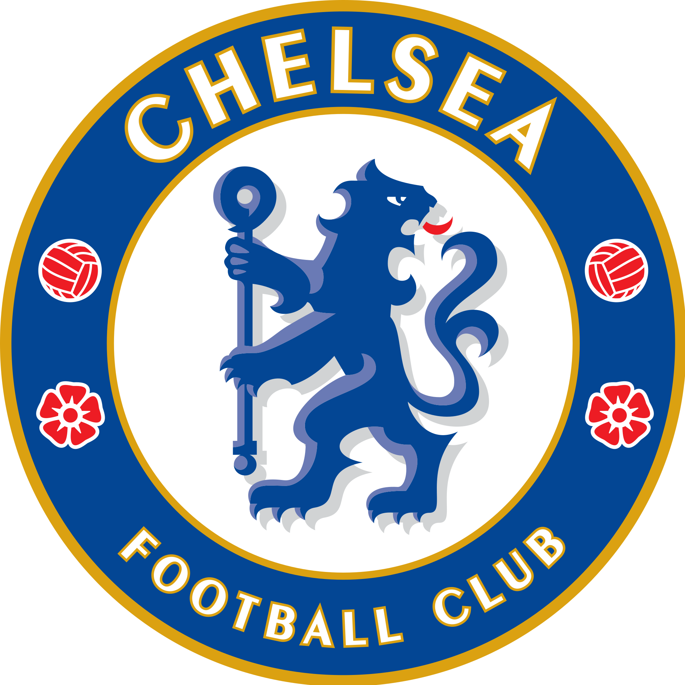
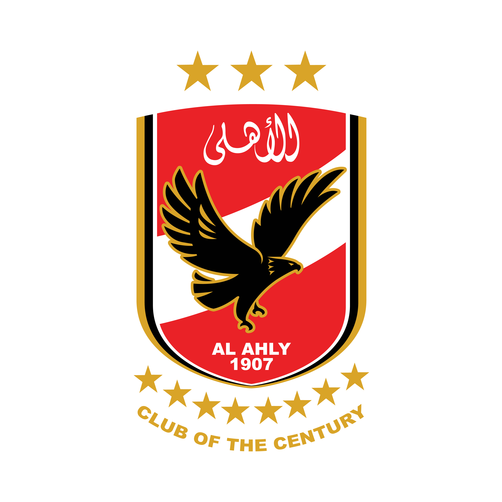
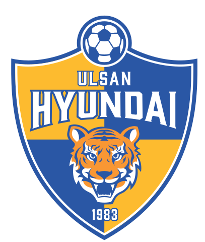

Participantes
-

Chelsea FC
Inglaterra
Campeão da Liga dos Campeões da UEFA de 2011-12
-

SCCP
Brasil
Campeão da Copa Libertadores da América 2012
-

Monterrey
Mexico
Campeão da Liga dos Campeões da CONCACAF de 2011-12
-

Al-Ahly Sporting Club
Egito
Campeão da Liga dos Campeões da CAF de 2012
-

Ulsan Hyundai
Coreia do Sul
Campeão da Liga dos Campeões da AFC de 2012
-
Auckland City
Autralia
Campeão da Liga dos Campeões da OFC de 2011-12